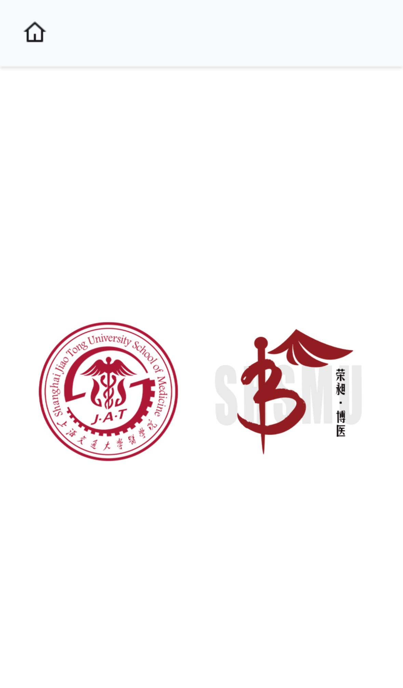
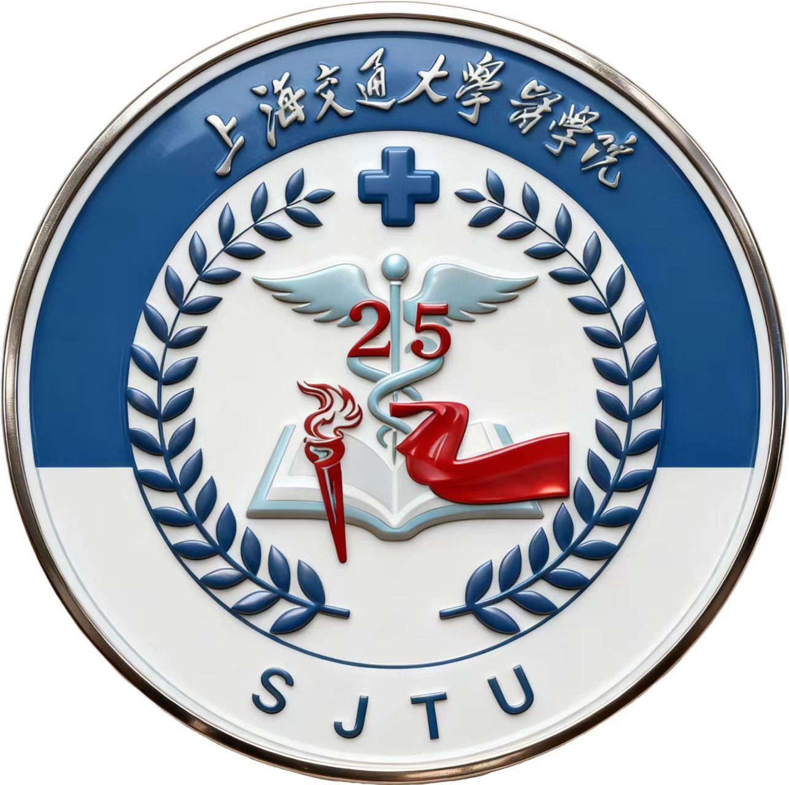
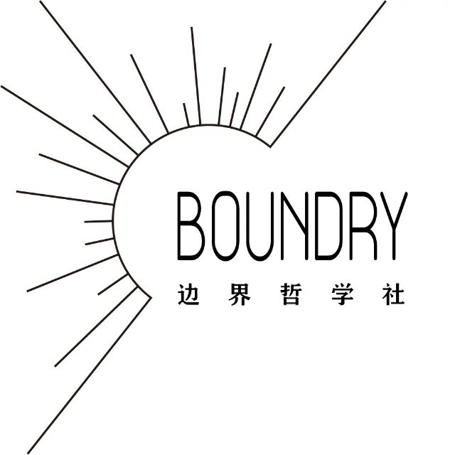
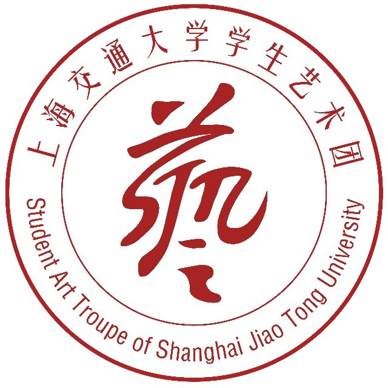
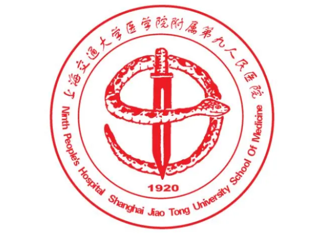
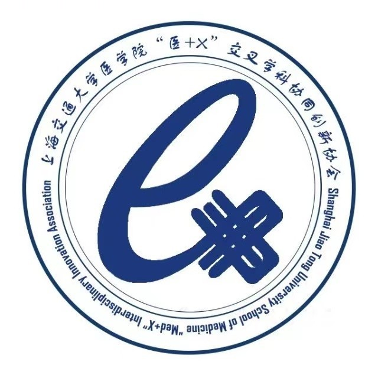

包子纪
明明这里的东西那么接近所谓的“高级”，但是这种“高级”永远不能比得上记忆里的“低级物”，这便是乡愁吧。
PROFILE / 2026
Jiayu Zhang

上海交通大学医学院 · 2025级临床医学五年制 · 本科二年级RECENT UPDATES
01 / PROJECTS
写作、研究与项目 / 20 项
03 / ESSAYS
片段
明明这里的东西那么接近所谓的“高级”，但是这种“高级”永远不能比得上记忆里的“低级物”，这便是乡愁吧。
除了中国共产党，除了社会主义国家，地球上其他国家是不会在山沟子里这么大力度修路、修桥、建学校、建卫生院的。农村是我党的根基所在，我党也没有忘记过农村。
04 / CURRENT READING
05 / EXPERIENCE
班委 · 第三行政组组长 / 宣传组成员
2026 年暑期，担任第三行政组组长，全程参与沪六医疗对口合作社会实践。团队项目《博学精技育良才，匠心帮扶造生机——沪六医疗对口合作教育科技人才一体化建设探索》获上海交通大学学生暑期社会实践优秀项目特等奖。
科普实践部项目组长
慧眼医+X青创工作室 · 沙龙工作推进中

2512班 · 文体委员
边界哲学社干事

交大民乐团二胡声部

九院眼科大学生创新训练计划（科研创新类）第一负责人 · 2026.10 起
在九院眼科参与科研训练，负责项目统筹，参与转录组数据分析和实验工作。

医学院“医+X”交叉学科创新协会会长
统筹协会运营和跨学科项目策划，组织医工交叉主题活动。